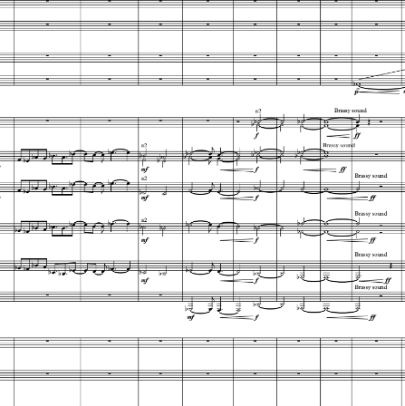

2 / 6
[ Art x Music ]
Acoustic Resonance 共鳴
Vibrating Particles

Bar 1: Percussions
呢首曲好鐘意營造共鳴 (Acoustic Resonance) 效果，你聽到嗎?
Music Score Artwork
3 / 6
[ Polyhedra x Music ]
正立方體 x 粵劇 “打引“
Cubes 正立方體
Bar 7: Gongs and Drums in Cantonese Opera

呢一段音樂模仿粵劇嘅 “打引 (鑼鼓)”，從粵劇嘅角度嚟睇，係為主角出場做鋪墊。而呢一段喺 Polyhe-dramatics 上由正立方體 (cube) 打響頭炮出場。
Music Score Artwork
6 / 6
[ Art x Music ]
粵曲 "追奏" x Harmonization
Harmonized 粵曲 "追奏"

Bar 26 (A) How it goes towards Harmonization

中西元素碰撞：依然是粵曲 "追奏"，但最後加上 Harmonization
Music Score Artwork